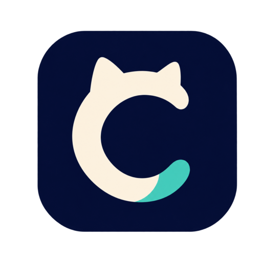

BROWSE AND TEST
ChezCat
A browser you can change. Pick a site, try a journey, and see what works.
Test websites
Start with a simple page, then try search, richer interfaces, media and browser checks. These are test targets; support and results vary by site and build.
Search
Google Google: browser engine Bing DuckDuckGo DuckDuckGo LiteType a query, open a result, go Back, then submit a different query.
Reading and documents
Wikipedia: Web browser Hacker News MDN Web Docs Project Gutenberg: Alice in WonderlandFollow article links, jump to headings, find a word, resize the window and change zoom.
Modern interfaces
YouTube ChezCat on GitHub OpenStreetMapTry menus, search fields, scrolling and navigation. On the map, search for a place, then pan and zoom.
Media and games
2048: keyboard game MDN: video examples WebGL AquariumCheck keyboard response, animation and actual media output. The aquarium exercises advanced graphics that may be unavailable.
Forms and HTTP
httpbin: POST form httpbin: request headers httpbin: two redirects httpbin: expected 404Use made-up form values. Inspect the submitted response, final address and request status in F12 > Network.
Browser reports
EFF header report Cover Your Tracks BrowserLeaks JavaScript GRC ShieldsUP!Check which report sections actually finish. About these checks
Simple navigation
Example Domain CERN website (HTTP) The first website (HTTP) NeverSSL (HTTP)Check text, links and Back/Forward. Google over HTTP can also show redirect behavior.
Layout and rendering
W3C CSS selector tests Wikipedia: languages and text Local image formats and animation Local flex layoutCompare text, colors, alignment and images at wide and narrow window sizes. Follow each test's expected result.
Connection checks
badssl: test directory Expired certificate: expect rejection Wrong hostname: expect rejection Self-signed certificate: expect rejectionCompare a normal HTTPS site with these deliberate certificate failures. Keep certificate validation enabled.
Repeatable test scenarios
Try the same steps after a change. Record the step that works or fails, together with the build shown in About and any Ctrl+I error.
- Search and return. On Google or DuckDuckGo Lite, search for browser engine, open a result, use Back, then search for Rust programming. Check the address, query and result links.
- YouTube journey. Open YouTube signed out. Check the header, guide and search field; enter a query; open a result; try play, pause, seek and sound; go Back and change the query. Record shell, results, navigation and playback separately.
- Read, find and resize. Open the Wikipedia article, use a contents link, find browser with Ctrl+F, zoom in, then narrow the window. Check wrapping, scroll position and link hit targets.
- Keyboard and forms. In local forms, move between controls with Tab and Shift+Tab, edit text, change checkboxes and radio buttons, and reset. Use the httpbin POST form for a remote submission with made-up values.
- JavaScript and animation. In the JavaScript workshop, change the counter, type into the greeting field and hide/show the preview. Play Cat Courier or 2048 to check keyboard input and updates.
- Images and layout. Compare the image workshop, image presentation and flex layout at two window sizes and zoom levels. Check transparency, animation, clipping and fine detail.
- Tabs, bookmarks and history. Open two different sites in separate tabs, switch between them, bookmark one with Ctrl+D and reopen it. Follow a few links, then use Back and Forward. If history recording is enabled, check Ctrl+H.
- Download a known file. Download the local text sample, open Downloads and verify its name and contents. Try Alt+click on the same file as a second route.
- Redirect, stop and recover. Start the local HTTP demo, then try its redirect chain and slow response. Press Esc during the slow load and open another page. Check the final address and activity record.
- Certificate errors. Load a normal HTTPS site, then try an expired certificate and a wrong hostname. Expect a certificate rejection, then check that a normal site still loads.
A visible page, a completed report and a working interaction are separate results. Ctrl+I shows resource activity and script errors; F12 opens Elements, Sources, Console and Network.
Local workshops
These pages ship with ChezCat and provide small, repeatable examples.
Scripts, controls and browser behavior
JavaScriptBrowser objectsBinary data and collectionsCat Courier gameFormsPOST and image formsRequest blockingBrowser checks
Layout, text and images
Layout compatibilityFlex layoutPositioningPage fontsText and symbolsImage selection and presentationImage formats and animationImage galleryJPEG imagesGIF images
Navigation and files
Local connection scenarios
Start Run-Http-Demo.cmd, then open the local HTTP demo. The following links use that server:
Three redirectsSlow response: try EscChunked responseGzip response404 with a page bodyRequest headers
Run-Https-Demo.cmd starts the HTTPS server; Run-Https-Browser.cmd opens ChezCat with its separate test trust file. These servers are only needed for the connection examples.
Useful keys
Ctrl+L: address F5: reload Ctrl+F5: full reload Esc: stop loading
Ctrl+F: find Ctrl+U: page source Ctrl+I: activity F12: inspector Ctrl+J: toggle JavaScript
Ctrl+D: add bookmark Ctrl+B: bookmarks Ctrl+H: history Ctrl+comma: settings
Ctrl+S: download page file Alt+click a link: download its file Download icon: recent downloads
The Menu icon or Alt+F opens Bookmarks, History and Settings. History starts off; enable recording and choose automatic cleanup in History settings. Saved data stays on this computer.
Alt+Left/Right or mouse side buttons move through history. Ctrl+plus/minus changes zoom; Ctrl+0 restores your default. Edit pages/start.html to change these links.